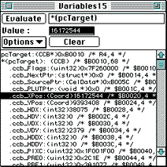
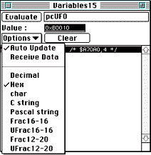

A Variables window is most useful for examining variables or data structures or for dereferencing pointers. It is also capable of parsing C-style expressions.

Figure 1: Variables window.
When you send a variable from another window to the Variables window, the window receiving data comes to the front.
Note: If there is only one Variables window, it is always the window that receives variable data.
Table 1: Working with the Variables window.
--------------------------------------------------------
To... |Do this...
--------------------------------------------------------
Open a window |Press Command-M or select Variables from
|the View menu.
--------------------------------------------------------
Add a variable |* Enter the variable you want to display
or other |into the text edit field at the top of
expression to |the window. Any standard C expression is
the display |allowed.
|* Press Return or click the Evaluate
|button.
|This enters the selection into the
|window and displays the current value.
--------------------------------------------------------
Examine a |Select a variable in any window by
variable from |double-clicking on it, then press
any window |Command-Shift-M to examine that variable
|in the Variables window.
--------------------------------------------------------
Delete a |* Click on the variable you want to
variable |delete.The variable name is displayed in
|the text field at the top of the window
|and the Clear button is enabled.
|* Click on the Clear button or press the
|Clear key on the Macintosh keyboard (you
|may need to do this twice if the
|variable is not editable).
--------------------------------------------------------
Change variable|* Click on the variable.The variable
values |name is displayed in the text field at
interactively |the top of the window. When you select
|the variable, its current value is
|displayed in the Value field.
|* Type the new value into the Value
|field and press Return or Enter to
|change the value.
|Note: You cannot edit constant values,
|expressions, or the base of a C
|structure. In that case, Not Editable is
|displayed in the Current Value field.
--------------------------------------------------------
Dereference a |Commanddouble-click on the pointer. A
pointer |new line representing the dereferenced
|pointer is added to the variables list.
|If the field cannot be dereferenced, you
|hear an alert sound.
--------------------------------------------------------
Select a window|Choose Receive Data from the Options
for receiving |menu of the desired Variables window. To
data |compare the values of variables at
|different states in the program, you can
|create several Variables windows and
|select a different one for receiving
|data at any state that's of importance.
--------------------------------------------------------

Figure 2: Variables window Options menu.
int.frac.
For example, Frac16 x = 0x00018000 is displayed as 1.5. You can also enter a new value using this format. No conversion is performed if you use no decimal point. For example, if you type 1.0, the new value is 0x00010000, but if you type 1, the new value is 0x00000001.Frac16 numbers-which use the Frac16 type defined by the operating system-are automatically displayed in Frac16-16 format.